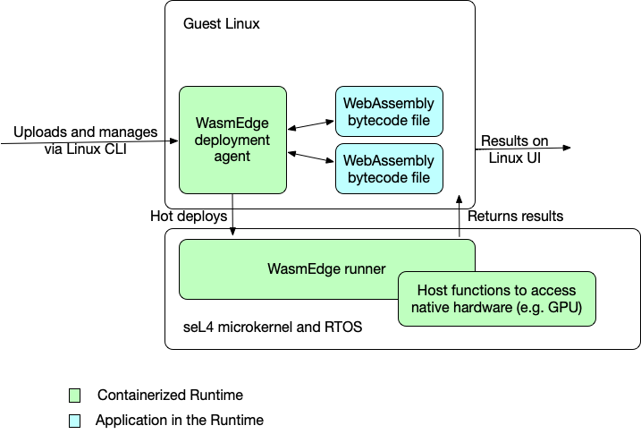

WasmEdge on seL4
Video demo | Build logs | Build artifact
In this article, we demonstrate how to run WasmEdge on the seL4 RTOS, there are two parts:
- Guest Linux OS on seL4: This is the controller of WasmEdge runtime, which will send wasm program to WasmEdge runner that is a agent on seL4 to execute.
- WasmEdge runner on seL4: This is the wasm program runtime, which will execute the given wasm program from Guest Linux OS.
The figure below illustrates the architecture of the system.

This demo is based on the seL4 simulator on Linux.
Getting Started
System requirements
Hardware:
- at least 4GB of RAM
- at least 20GB of disk storage (the wasmedge_sel4 directory will contain over 11 GB of data after the following installation completes)
Software: Ubuntu 20.04 with dev tools packages (ep. Python) installed. We recommend the GitHub Actions Ubuntu 20.04 VM (See a list of installed apt packages). Or, you could use our Docker image (see the Dockerfile).
$ docker pull wasmedge/sel4_build
$ docker run --rm -v $(pwd):/app -it wasmedge/sel4_build
(docker) root#
If you do not want to build the seL4 system simulator yourself, you can download the build artifact from our GitHub Actions, and skip directly to Boot wasmedge-seL4
Automatic installation: all-in-one script
Use our all-in-one build script:
wget -qO- https://raw.githubusercontent.com/second-state/wasmedge-seL4/main/build.sh | bash
And this will clone and build our wasmedge on seL4 to an image.
After finishing the build script, you will have a folder sel4_wasmedge.
If this automatic installation completed successfully, skip over the manual installation information and proceed to boot wasmedge-sel4
Manual installation: managing memory usage
The above all-in-one script will work in most cases. However, if your system resources were stressed and you encountered an error such as ninja: build stopped: subcommand failed please note that you can decrease the parallelization of the install by explicitly passing in a -j parameter to the ninja command (on the last line of the build.sh file). You see, Ninja runs the most amount of parallel processes by default and so the following procedure is a way to explicitly set/reduce parallelization.
Manually fetch the `wasmedge-sel4 repository.
cd ~
git clone https://github.com/second-state/wasmedge-seL4.git
cd wasmedge-seL4
Manually edit the build.sh file.
vi build.sh
Add the following -j parameter to the last line of the file i.e.
ninja -j 2
Make the build.sh file executable.
sudo chmod a+x build.sh
Run the edited `build.sh file.
./build.sh
Once this manual installation is complete, follow along with the following steps; boot wasmedge-sel4
Boot wasmedge-seL4
cd sel4_wasmedge/build
./simulate
Expected output:
$ ./simulate: qemu-system-aarch64 -machine virt,virtualization=on,highmem=off,secure=off -cpu cortex-a53 -nographic -m size=2048 -kernel images/capdl-loader-image-arm-qemu-arm-virt
ELF-loader started on CPU: ARM Ltd. Cortex-A53 r0p4
paddr=[6abd8000..750cf0af]
No DTB passed in from boot loader.
Looking for DTB in CPIO archive...found at 6ad18f58.
Loaded DTB from 6ad18f58.
paddr=[60243000..60244fff]
ELF-loading image 'kernel' to 60000000
paddr=[60000000..60242fff]
vaddr=[ff8060000000..ff8060242fff]
virt_entry=ff8060000000
ELF-loading image 'capdl-loader' to 60245000
paddr=[60245000..6a7ddfff]
vaddr=[400000..a998fff]
virt_entry=408f38
Enabling hypervisor MMU and paging
Jumping to kernel-image entry point...
Bootstrapping kernel
Warning: Could not infer GIC interrupt target ID, assuming 0.
Booting all finished, dropped to user space
<<seL4(CPU 0) [decodeUntypedInvocation/205 T0xff80bf85d400 "rootserver" @4006f8]: Untyped Retype: Insufficient memory (1 * 2097152 bytes needed, 0 bytes available).>>
Loading Linux: 'linux' dtb: 'linux-dtb'
...(omitted)...
Starting syslogd: OK
Starting klogd: OK
Running sysctl: OK
Initializing random number generator... [ 3.512482] random: dd: uninitialized urandom read (512 bytes read)
done.
Starting network: OK
[ 4.086059] connection: loading out-of-tree module taints kernel.
[ 4.114686] Event Bar (dev-0) initalised
[ 4.123771] 2 Dataports (dev-0) initalised
[ 4.130626] Event Bar (dev-1) initalised
[ 4.136096] 2 Dataports (dev-1) initalised
Welcome to Buildroot
buildroot login:
Login on guest linux
Enter root to login
buildroot login: root
Expected output:
buildroot login: root
#
Execute wasm examples
Example A: nbody-c.wasm
Run nbody simulation.
wasmedge_emit /usr/bin/nbody-c.wasm 10
Expected output:
[1900-01-00 00:00:00.000] [info] executing wasm file
-0.169075164
-0.169073022
[1900-01-00 00:00:00.000] [info] execution success, exit code:0
Example B: hello.wasm
Run an easy application to print hello, sel4 and a simple calculation.
wasmedge_emit /usr/bin/hello.wasm
Expected output:
[1900-01-00 00:00:00.000] [info] executing wasm file
hello, sel4
1+2-3*4 = -9
[1900-01-00 00:00:00.000] [info] execution success, exit code:0